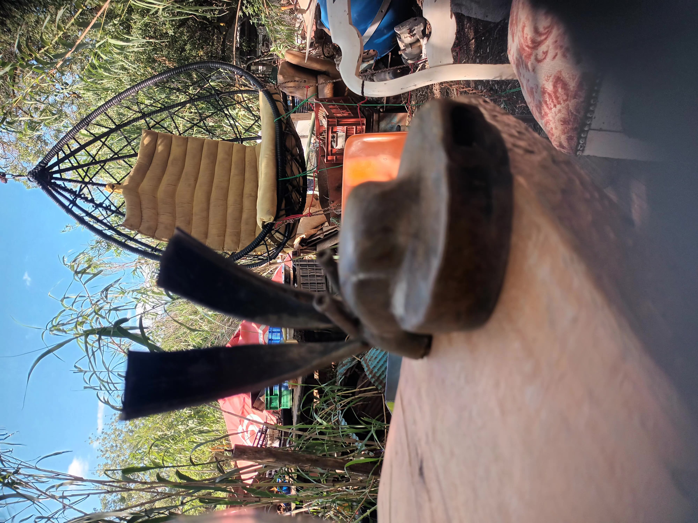
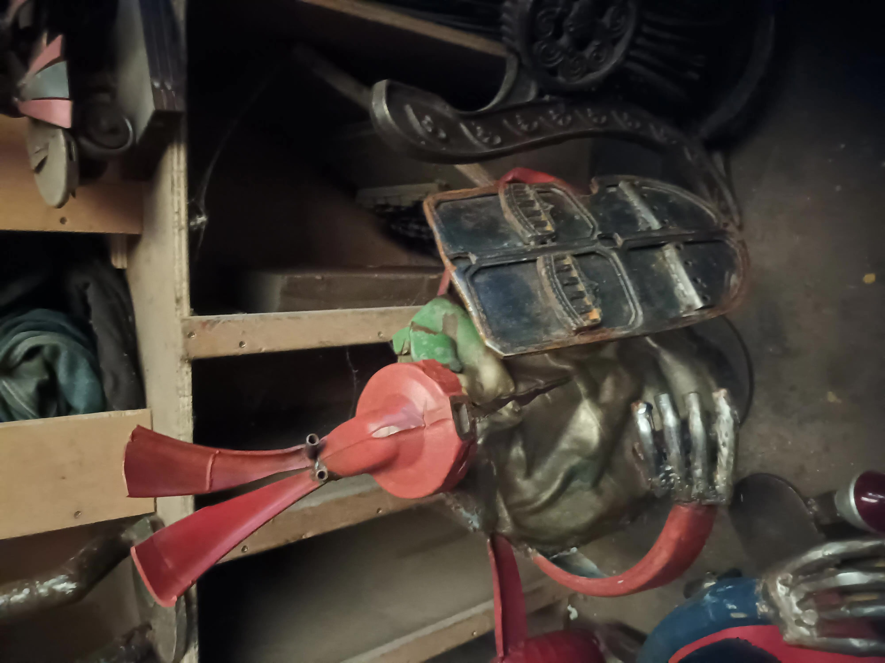
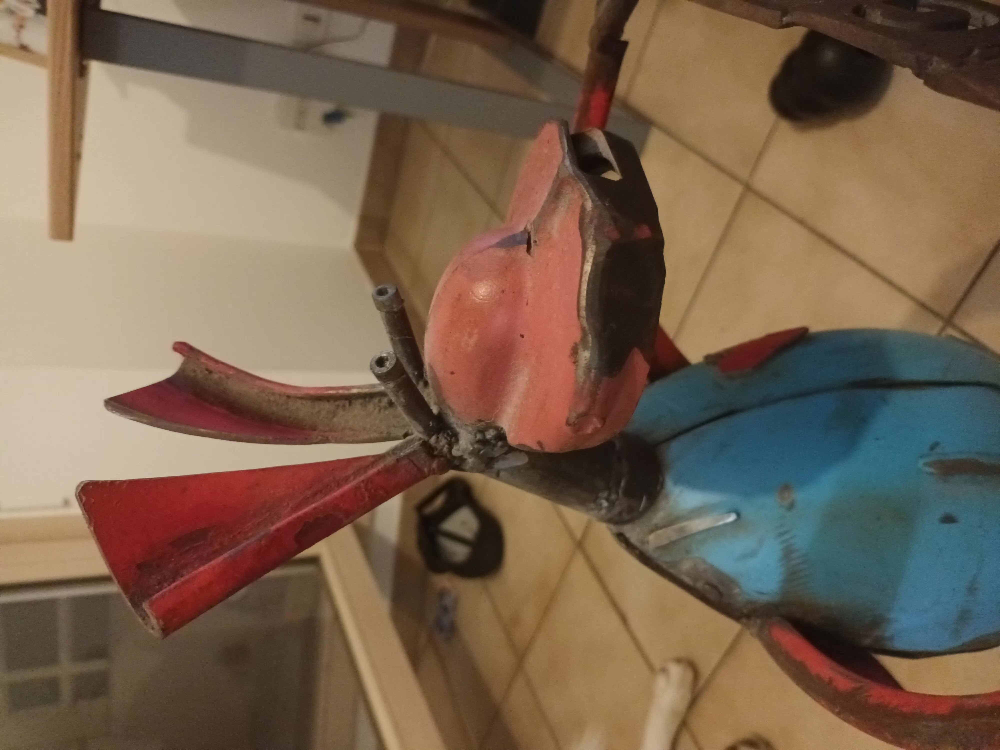

La Galerie
Découvrez l'histoire de chaque création unique née de la récupération métallique.

Le Veilleur
Forgé à partir de pièces de moteur agricole, cette pièce symbolise la protection de la terre.
Consulter l'œuvre

L'Envol
Une sculpture légère créée avec des chaînes de vélo recyclées, illustrant le mouvement.
Consulter l'œuvre

Résilience
Structure massive réalisée avec d'anciens outils de jardinage soudés à la main.
Consulter l'œuvre